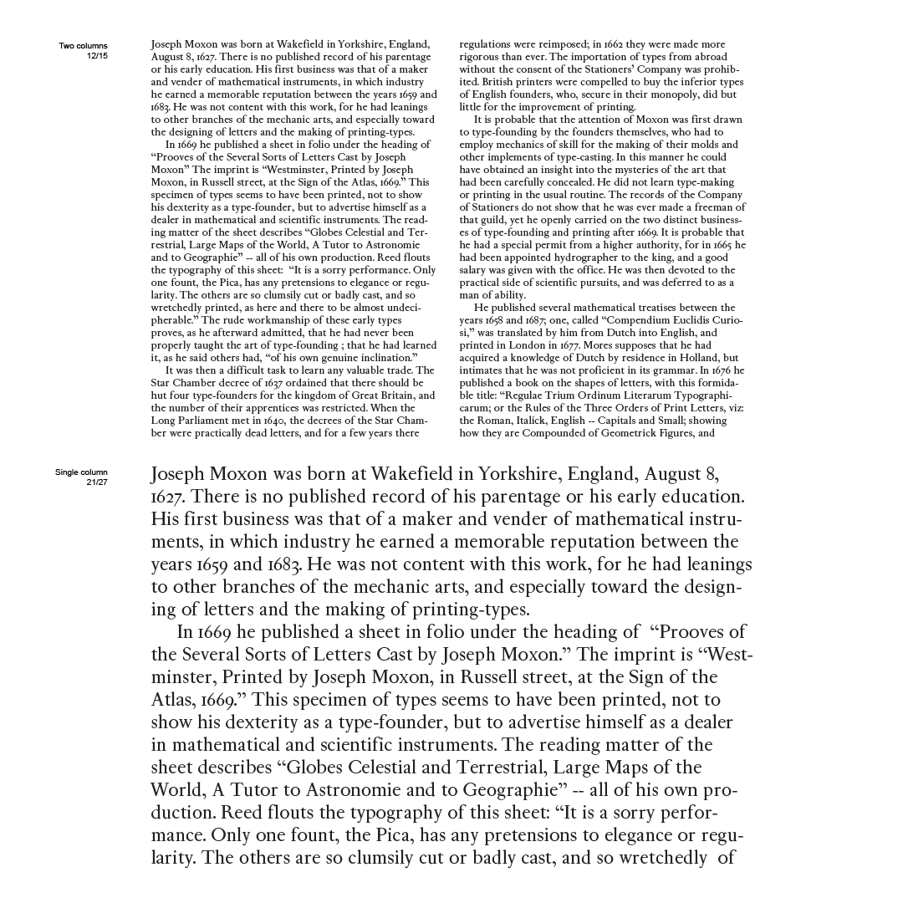
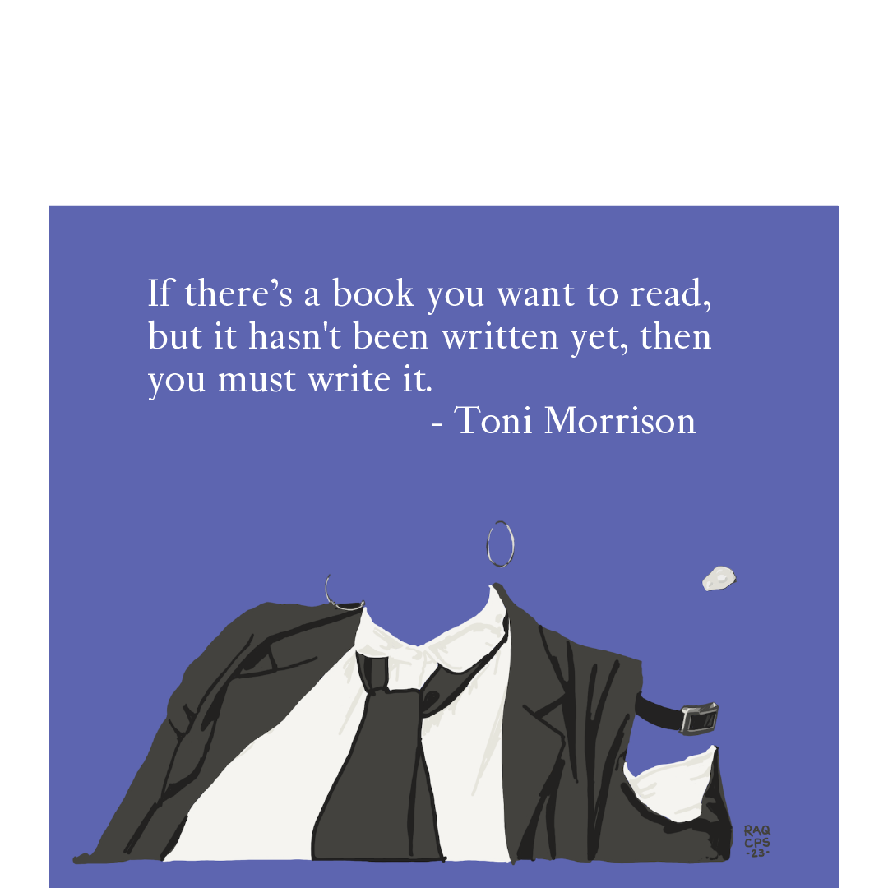
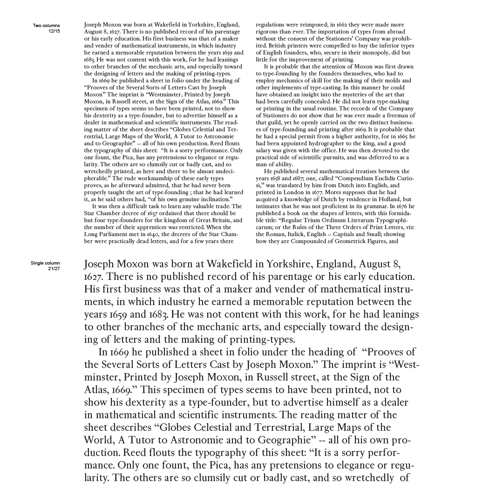
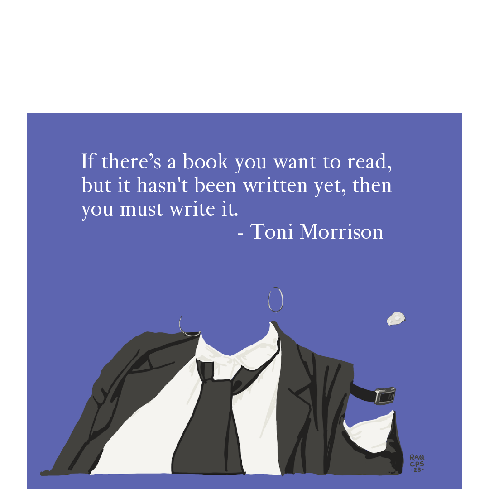

Mechanick
Raquel Rodriguez
Mechanick is a revival typeface based on Joseph Moxon’s Mechanic Exercises, which is the first known printer’s manual published in English. Moxon wrote and published the work in 1683 and was himself a type-founder. Given his background I was curious what typeface he used to dispense the information in the manual.
While keeping to the characteristics of weight and texture, the revival tidies up some of the quirks of the original. The result is a promising typeface with a few wrinkles left to iron out.
In addition to building out a more complete character set with language support, I also plan to add an italic and at least one additional weight to Mechanick.
Raquel Rodriguez is an artist and developer living in the Midwest. Born and raised in Chicago, graffiti was their introduction to the practice and theory of letterform structure. They enrolled in Type West to complement their existing knowledge with formal education. They look forward to completing their first font family in the not too distant future.
 


